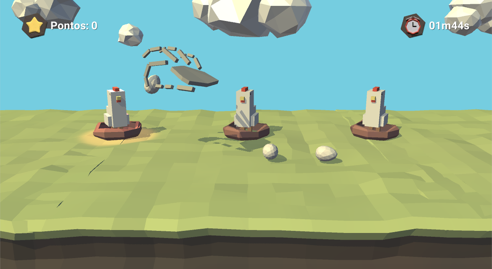

Pinchicken
The mechanics of Pinchiken game is, basically, to pinch eggs that appear on the ground and drop it on the right chicken nest. The scene is composed by three chicken nests with chickens and eggs that keep falling on the ground. When the player pinch and egg, the game will highlight only one nest to drop the egg on. When the player succeeds moving the egg to the right nest, 10 points are awarded, a sound and a visual effect are played as feedback. When it is mistakenly placed, negative sound and visual feedback are played, but no points are awarded neither subtracted. Punishing the player is not the intention, because it can affect player motivation.